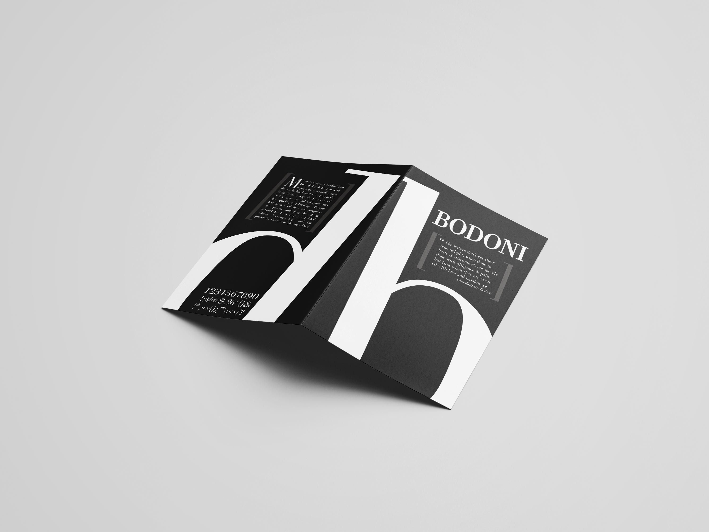
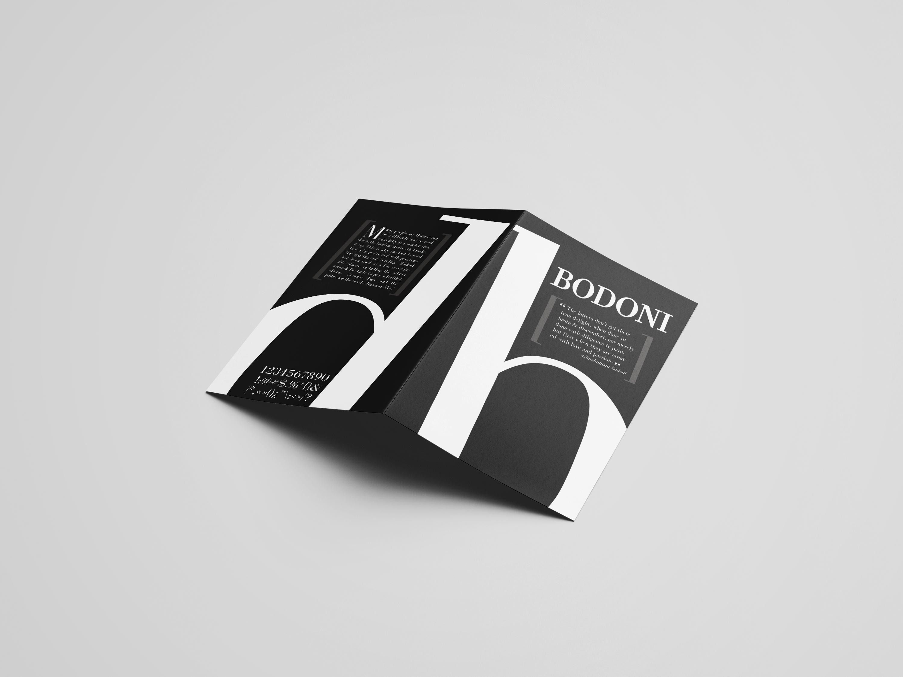

Type Specimen Booklet: Bodoni
In this project, I created a small booklet about the typeface Bodoni including its unique charateristics and a brief history about the typface and its designer. The booklet unfolds to reveal an 11x17 poster featuring lyrics from the song "Smells Like Teen Spirit" by Nirvana because Nirvana's logo utilizes Bodoni. I wanted to juxtapose the classy, elegant look of the typeface with the dark, grungy mood of Nirvana's music by using both a clean, gridular design and some jagged distortions on the text. I chose to only use type as image and a greyscale color scheme in order to exsenutate the finer details of the typeface.


 

booklet mockups

poster mockup
PROCESS
To begin the process of creating this booklet, I first had to research about Bodoni, it's designer, what makes it unique, and it's popular application. This research informed how I wanted to showcase the unique aspects of Bodoni in my booklet and the sample text on the poster, which is lyrics from "Smells Like Teen Spirit" by Nirvana because Nirvana's logo uses Bodoni.
presentation of research on typeface
Through the development of this booklet, I experimented with how to use the different families and styles of Bodoni in order to create an interesting yet cohesive design. The poster in particular went through many varying iterations until I landed on the gridular structure of the final version. The sketches of the final layout represent a very difinitive "ah ha" moment when I finally landed on a solid direction for the design.
booklet pages draft #1
booklet pages draft #2
poster sketches


digital poster sketches